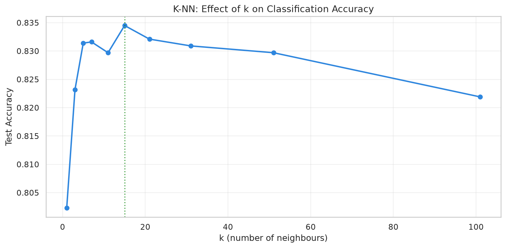
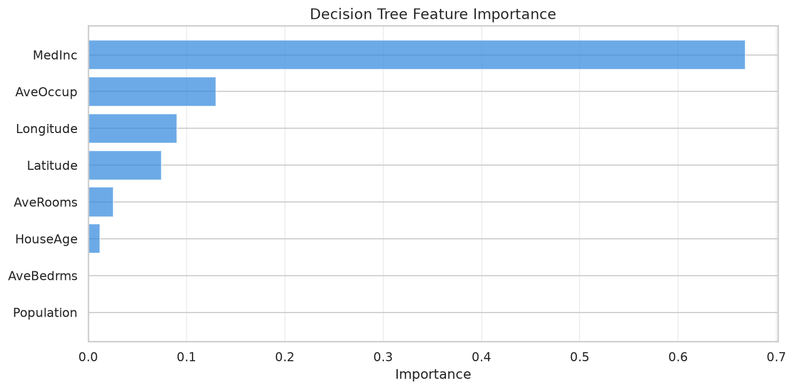

📊 Dataset: California Housing (binned → binary: High/Low price)
"kw">class="cmt"># Binarize: above median = 'High', "kw">else 'Low'
median_val = df['MedHouseVal'].median()
df['PriceCategory'] = (df['MedHouseVal'] > median_val).astype(int)
"kw">print(f'Median price: ${median_val*100:.0f}K')
"kw">print(f'Low: {(df["PriceCategory"]==0).sum()}')
"kw">print(f'High: {(df["PriceCategory"]==1).sum()}')"kw">from sklearn.neighbors "kw">import KNeighborsClassifier
"kw">class="cmt"># Try different k values
"kw">for k "kw">in [1, 3, 5, 7, 11, 15, 21, 31, 51, 101]:
knn = KNeighborsClassifier(n_neighbors=k)
knn.fit(X_train, y_train)
acc = knn.score(X_test, y_test)
"kw">print(f'k={k:3d}: Accuracy={acc:.4f}')
Effect of k on K-NN classification accuracy (real data)
"kw">from sklearn.tree "kw">import DecisionTreeClassifier
"kw">from sklearn.metrics "kw">import classification_report
dt = DecisionTreeClassifier(max_depth=5, random_state=42)
dt.fit(X_train, y_train)
y_pred = dt.predict(X_test)
"kw">print(f'Accuracy: {accuracy_score(y_test, y_pred):.4f}')
"kw">print(classification_report(y_test, y_pred, target_names=['Low', 'High']))
Decision Tree Feature Importance
拖动滑块选择 K 值，观察 K-NN 准确率变化（基于真实数据计算结果）:
1️⃣ 为什么 k=1 的时候准确率反而不高？
2️⃣ 决策树的可解释性比 K-NN 好在哪？从代码中你能看到什么？
3️⃣ 如果数据有 100 维，K-NN 还能工作吗？（提示：维数灾难）
4️⃣ 为什么决策树对 High 类的 Recall 只有 0.67？